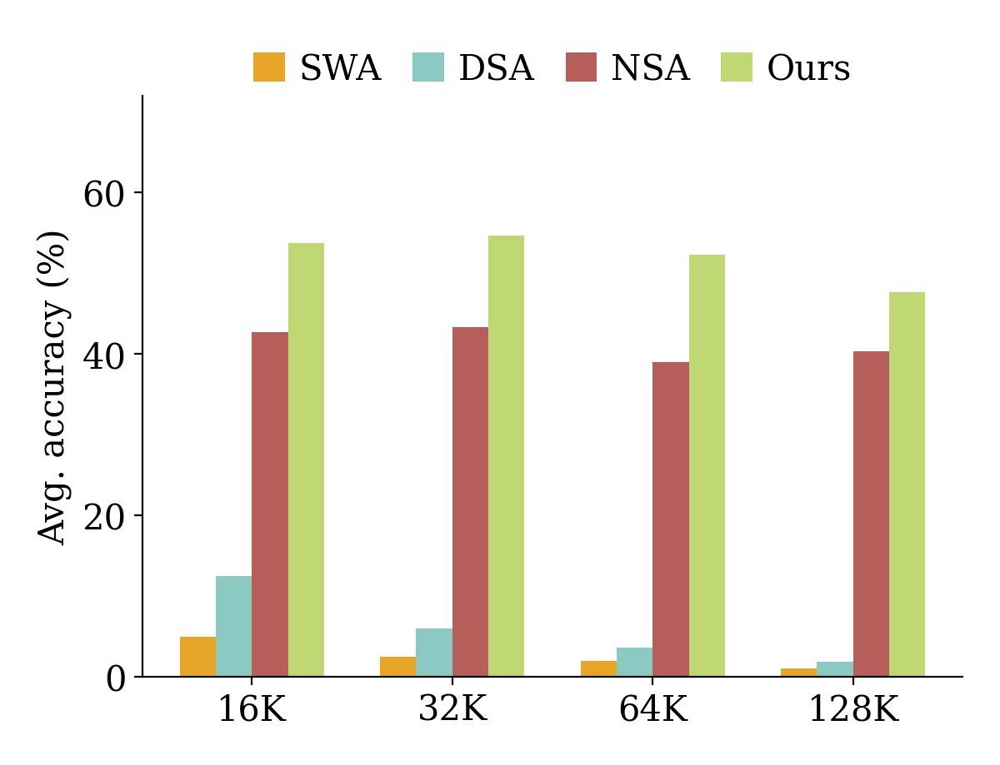
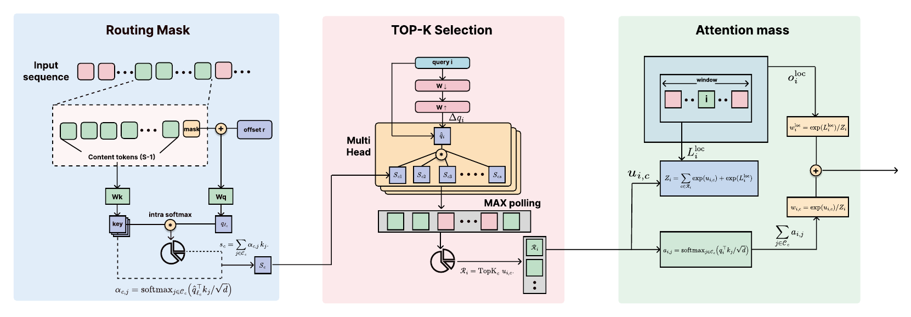
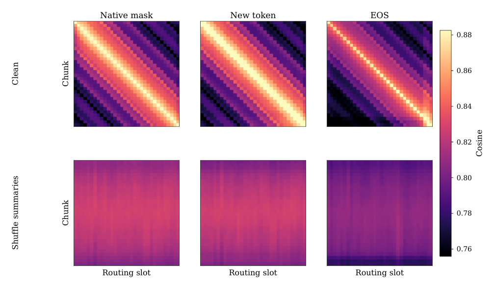
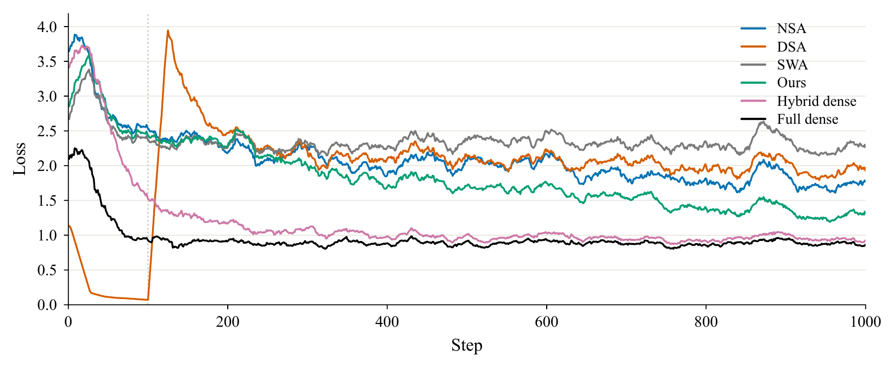
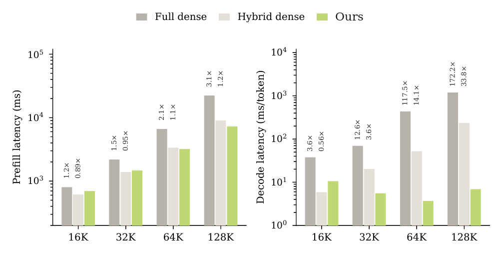

Routing mask
The mask at the end of a chunk keeps its embedding and gets one learned offset at the input. Its query runs a softmax over the chunk's content keys, and the weighted sum is the chunk summary.
sc = Σj αc,j kj
Version 2 · Learned routing
A diffusion language model that learns to route long contexts with its own mask token.

01 · The idea
Sparsifying a diffusion model only at inference leaves its dense weights unchanged and merely hides tokens. v2 instead continues training under the sparse budget, and gives the model a place to write what a chunk contains.
That place is the model's native mask token. One mask closes every chunk, and a learned role offset marks it as a routing slot rather than a token to predict. Its query pools the chunk into a summary; every other query scores those summaries and reads the chunks it ranks highest.
02 · Method
The window layers mix context locally in both directions. Every fourth layer is where long-range evidence may enter, so the learned route is the only long-range path the model has.

The mask at the end of a chunk keeps its embedding and gets one learned offset at the input. Its query runs a softmax over the chunk's content keys, and the weighted sum is the chunk summary.
sc = Σj αc,j kj
A rank-64 residual calibrates the scoring query. The score of a chunk is the query's agreement with its summary plus the entropy of the pooling weights; query heads that share a key head choose chunks together.
ui,c = q̂iᵀsc/√d + H(αc)
The scores of the selected chunks and the log-sum-exp of the local window are normalized in one partition. A second softmax spreads each chunk's share over its content tokens.
oi = Σc wi,c Σj ai,j vj + wiloc oiloc
| Variant | Every 4th layer | Other 21 layers |
|---|---|---|
| Ours | window radius 256 + 32 chunks of 64 | window radius 1,280 |
| NSA | window radius 128 + 32 blocks of 64 + one summary per block | window radius 1,280 |
| DSA | 2,560 tokens chosen by an indexer | window radius 1,280 |
| SWA | window radius 1,280 | window radius 1,280 |
| Hybrid dense | all keys | window radius 1,280 |
| Full dense | all keys | all keys |
03 · Results
Three RULER probes, 100 examples each. Pick a length, and whether the YaRN factor is scaled to that length or held at the training value of 8. The underline marks the best sparse model.
The margin is carried by single-needle retrieval: 100.0, 99.0, 98.0 and 95.0 from 16K to 128K, against 81.0, 87.0, 86.0 and 83.0 for NSA. With the factor held at 8 it stays at 99.0 or above while full dense falls to 94.0 at 64K.
Multi-key and variable tracking stay far below full dense, because one missed chunk fails the example. On LongBench the order reverses: the all-window model averages 30.9, ours 25.4, full dense 44.3. A wide window beats a few selected chunks when most of the document matters.
04 · Routing-mask probes
Two interventions on 16K single-needle retrieval, compared with two other slots trained the same way: the end-of-sequence token and a new learned token.


05 · Latency
Median of ten trials on one synthetic sequence with 128 masked answer tokens, under the same cached decoder for every model.

06 · From v1 to v2
Prefilling-dLLM selected a handful of chunks once, around frozen weights. v2 keeps the idea of reading a few chunks and makes the choice learned, per query and per layer.
07 · Reference
The citation for v2 will be added here. Until then, please cite Prefilling-dLLM.